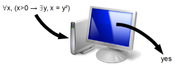

Reasoning about first-order statements for real numbers can be automated! For instance, a computer program can say
whether statements such as
∃x, x² + 5x + 2 = 0.
∀x, (x>0 → ∃y, x = y²).
are true or false. We say that the theory of the closed fields is decidable.

More precisely, as an input, we consider a statement written with the following
symbols.